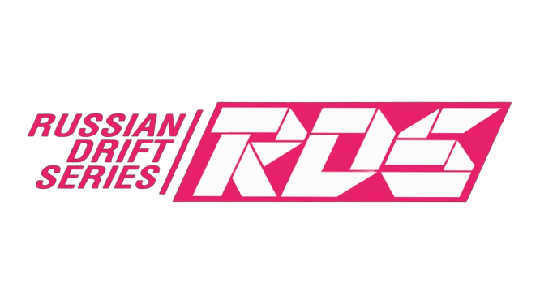
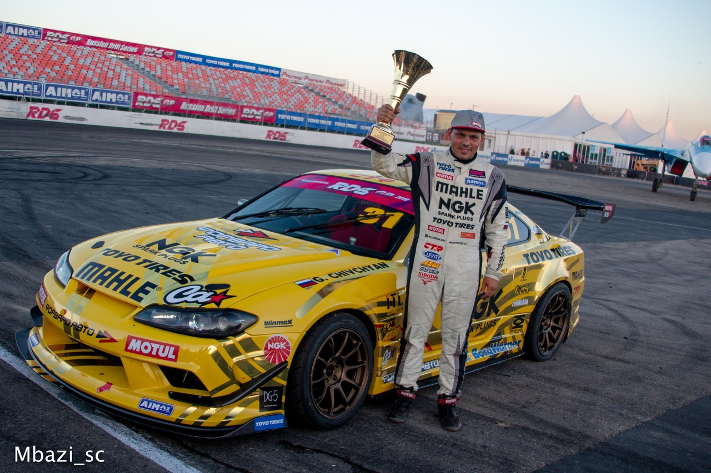
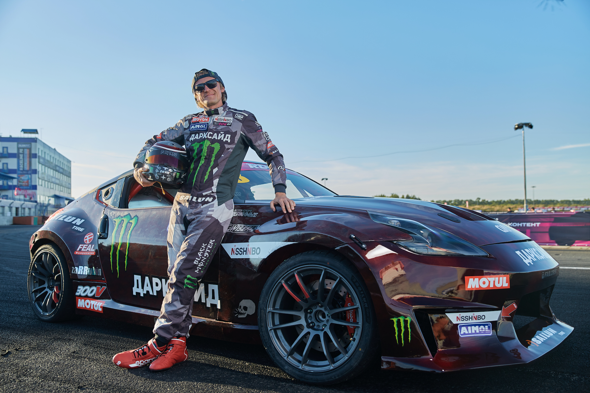
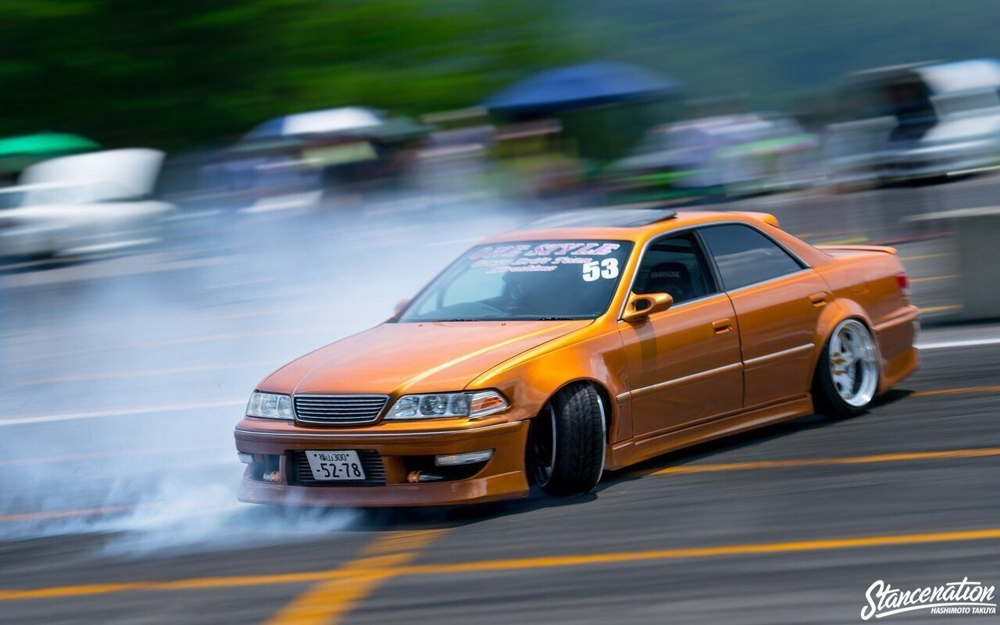
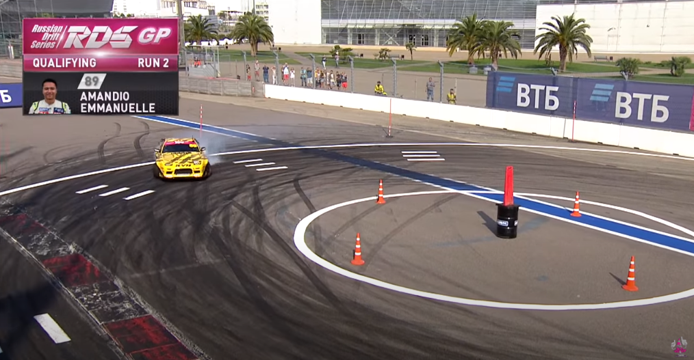
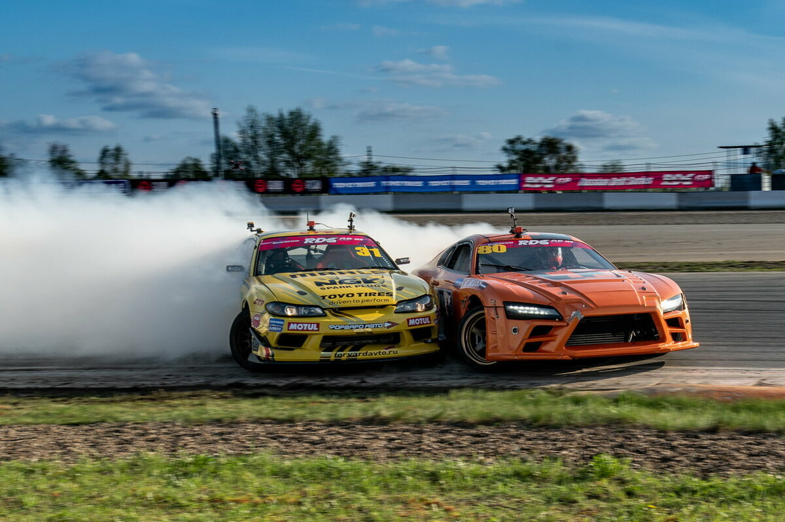

Мотор ревёт, шины визжат, автомобиль в облаке дыма… Если находите это захватывающим, значит, дрифтинг для вас. Это одновременно и красивый спорт, и особая культура, в которой есть всё: эффектное зрелище, мощные и быстрые «кары», смелость и смекалка. Ниже вы узнаете, что такое дрифт, и познакомитесь с его видами, приёмами и специальным оборудованием.
Слово «дрифт» (to drift с англ. «дрейфовать») означает особый автоспорт с характерной методикой перемещения на поворотах при высокой скорости. Заднюю ось заносит, шины не сцепляются с асфальтом, передние колёса постоянно находятся в позиции, противоположной направлению поворота, и машина мчится практически боком. Но при этом дрифтер полностью контролирует авто и управляет им так, как ему нужно. Каждый водитель выбирает свой стиль езды, применяя разные техники и приёмы. Главное в этом спорте не скорость, а эффектные повороты.
RDS - Russian Drift Series. Это турнир по дрифту в России, с ним вы можете ознакомится ниже, нажав по баннеру.
Основные дрифтеры России это Гоча (Георгий Чивчян), Дамир Идиятулин, Алексей Головня, Царь (Аркадий Цареградцев), Илья Федоров, Федор Воробьев, ddkaba (Сергей Кабаргин)
Узнать больше о Гоче (Георгий Чивчан) Российский пилот Георгий «Гоча» Чивчян стал первым в истории двукратным победителем Межконтинентального кубка по дрифту (International Drifting Cup), который проходит под эгидой FIA в Токио.
Узнать больше о Царе (Аркадий Цареградцев) Российский гонщик Аркадий Цареградцев стал вторым по итогам первого Межконтинентального кубка по дрифтингу под эгидой FIA, который прошел в Японии на минувших выходных, обойдя в одном из заездов легендарного Масато Кавабата, сообщает ИА PrimaMedia со ссылкой на пресс-службу PrimRing. В командном зачете российские дрифтеры заняли первое место.
Дрифтинг — это больше, чем умение профессионально входить в занос и заставлять авто ехать боком. Так называется красивый и захватывающий спорт для смелых автопилотов.
После легализации дрифта в 2000 г. был организован профессиональный турнир D-1 Grand Prix. Теперь эта крупная ассоциация дрифтинга устраивает состязания в Америке, на австралийском континенте, в странах Европы и РФ. По всей планете проходит много любительских соревнований и несколько крупных серий в разных частях мира: в Америке — Formula D;в Новой Зеландии — NZ Drift Series;в Европе — Nordic Drifting Series, EEDC и Drift Masters European Championship;в России — Russian Drift Series и Formula Drift. Russia. Правила дрифтинга совершенно простые. Каждая машина проходит 3 заезда: одиночный и два парных. В первом варианте судьи оценивают зрелищное представление, быстроту и угол заноса. В парном заезде машины друг друга догоняют, стараясь уменьшить разрыв между собой, максимально безошибочно пройти назначенный отрезок дороги. Судьи оценивают не только скорость соревнующихся автомобилей, но и правильность прохождения траектории поворота, угол заноса, стиль и зрелищность. Очень важно, чтобы гонка красиво выглядела.
Фильмы о дрифте: 1987 г. — «Pluspy», кинолента о красоте скольжения по трассе, в главной роли — Кэйити Цутия, один из родоначальников этого стиля вождения;с 1995 г. — «Initial D», анимационный сериал о японских уличных гонках;2003 г. — «Библия Дрифта», документальный фильм с К. Цутия о приёмах дрифтинга;2005 г. — «Экстремальные гонки», экранизация аниме;2005 г. — «Неуправляемый занос», российский фильм об уличных гонках;2006 г. — «Тройной форсаж: Токийский дрифт», популярный художественный фильм, в котором вновь снялся К. Цутия;2008 г. — «Эволюция: Дрифт в Куала-Лампур», малайзийский боевик о дрифтинге.
Backward entry (side breaking drift) – прием, когда происходит срыв задней оси в занос, и задняя часть автомобиля «обгоняет» переднюю, при этом достигается огромный угол заноса. Обычно backward’ы выполняются на очень большой скорости входа, в основном такую технику можно увидеть в D1GP. Часто это заканчивается разворотами и авариями.
Клач-кик (Clutch Kick) — Это технология "отправки" автомобиля в занос. Занос осуществляется за счёт сцепления: его необходимо выжать на стадии приближения автомобиля к повороту или в самом начале скольжения, затем сцепление нужно резко бросить, это обеспечит рывок привода, что нарушит сцепление с дорогой задних колёс.
Клиппинг-поинт (точка срезки) – Это контрольная точка на трассе, указывающая пилоту наиболее точное прохождение траектории, с точки зрения строителя трассы. Пилот должен проехать трассу максимально близко к клиппинг-поинтам. Клиппинг-поинты бывают внутренние и внешние.
Парный дрифт – вид состязаний в дрифтинге, когда две машины проходят трассу одновременно. Как правило проходят по правилам «лидер-преследователь», когда одна машина едет впереди (лидер) и ее целью является оторваться от преследователя, а преследователю нужно либо обогнать лидера либо подавить расстояние между ними. Каждый гонщик на протяжении 2-х заездов является и лидером, и преследователем.
